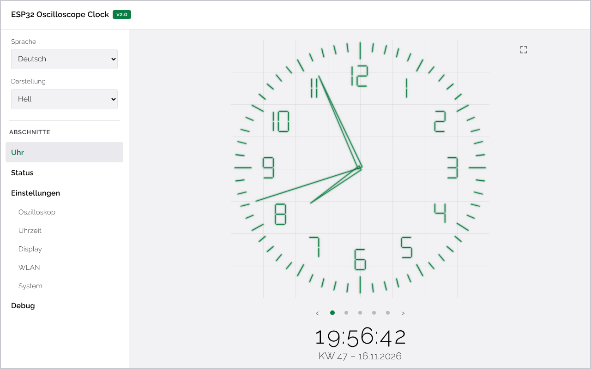
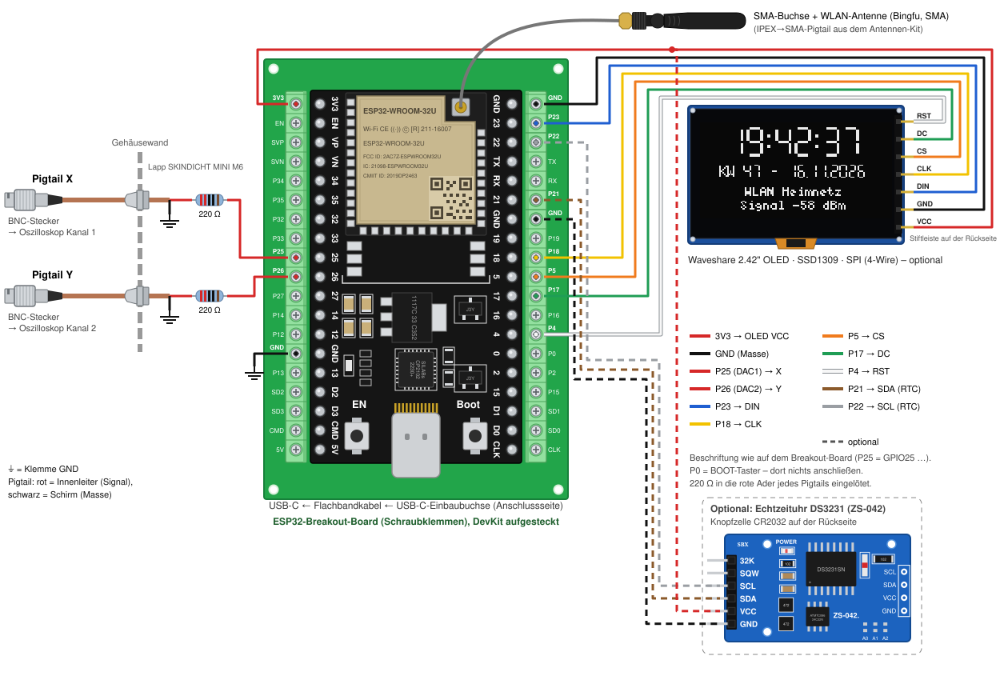
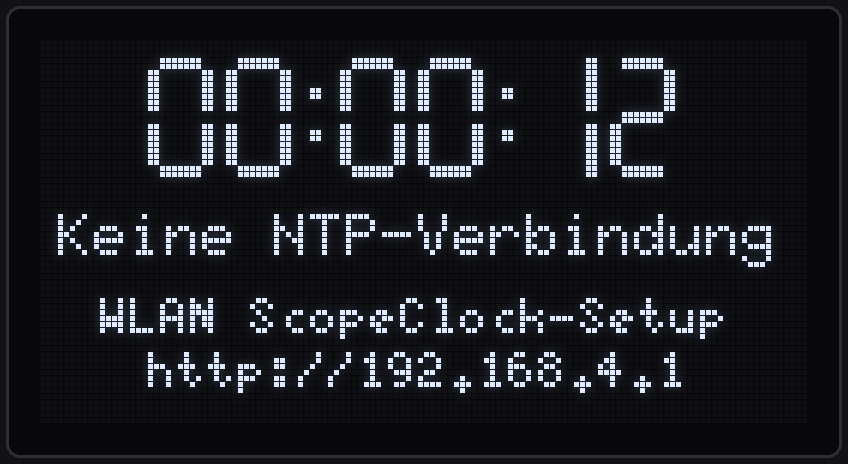
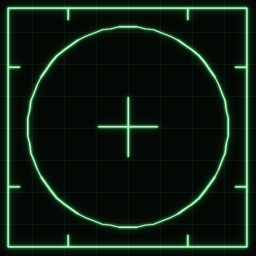
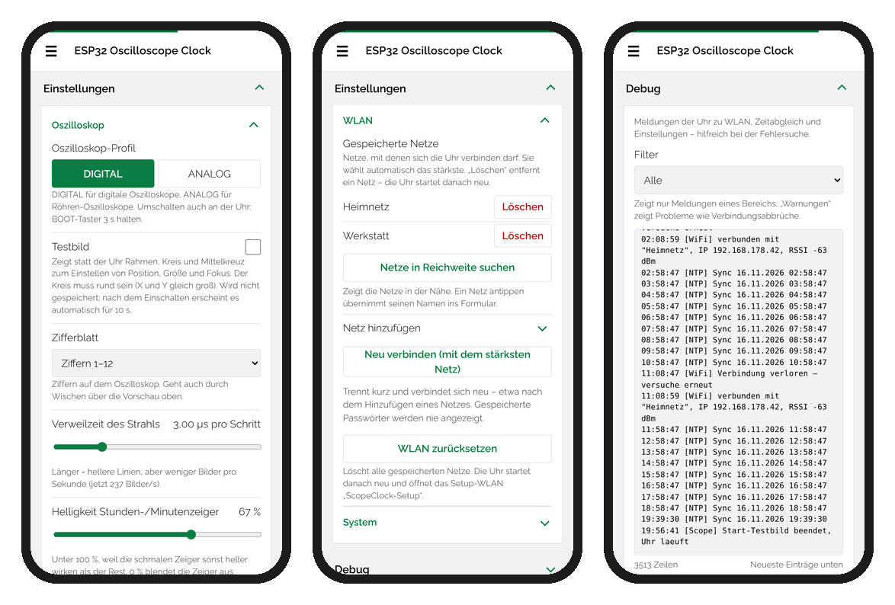
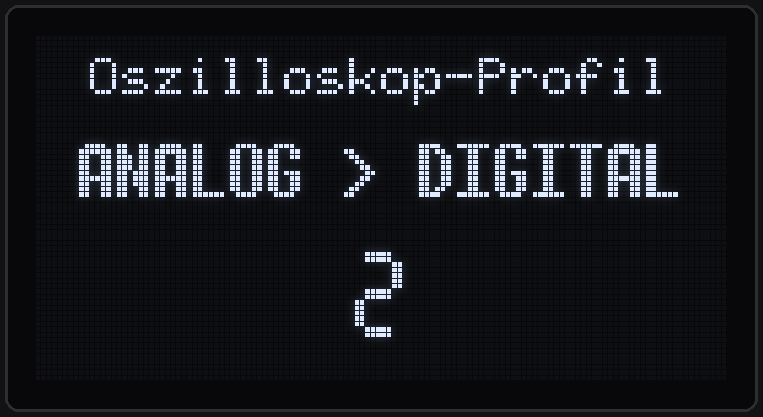
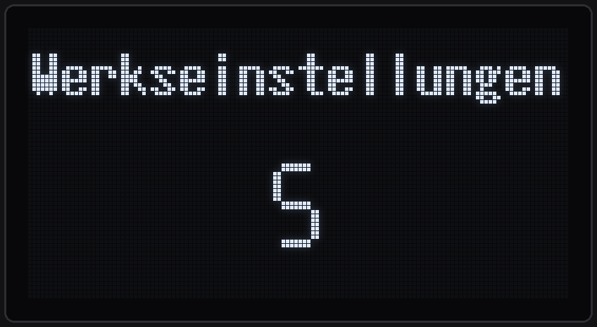
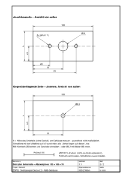

ESP32 Oscilloscope Clock v2.0
Vektoruhr für das Oszilloskop im X/Y-Betrieb
mit WLAN, Zeitserver, OLED-Anzeige und Webinterface
mit WLAN, Zeitserver, OLED-Anzeige und Webinterface
config.h · A.2 Schnittstellen des Webservers · A.3 Dateien im Projekt · A.4 Herkunft und LizenzenAllgemein bekannte Abkürzungen (WLAN, USB, PC) sowie Pin- und Typbezeichnungen (P25, GPIO25, DS3231) sind nicht aufgeführt.
| ABS | Acrylnitril-Butadien-Styrol (Gehäusekunststoff) |
| BNC | Bayonet Neill–Concelman (Koaxial-Steckverbinder) |
| CLK | Clock – Taktleitung (SPI) |
| CS | Chip Select – Bausteinauswahl (SPI) |
| DAC | Digital-to-Analog Converter – Digital-Analog-Wandler |
| DC | Direct Current – Gleichspannung (Kopplung); am OLED: Data/Command |
| DIN | Deutsches Institut für Normung; am OLED: Data In |
| DNS | Domain Name System |
| EN | Enable – Reset-Taster des DevKits |
| FPC | Flexible Printed Circuit – Flachbandkabel |
| GND | Ground – Masse |
| GPIO | General Purpose Input/Output – frei nutzbarer Anschluss |
| IDE | Integrated Development Environment – Entwicklungsumgebung |
| IP | Internet Protocol (IP-Adresse); bei IP67/IP68: Schutzart (International Protection) |
| IPEX | Bauform kleiner Antennen-Koaxialstecker (auch U.FL) |
| IRAM | Internal RAM – schneller interner Arbeitsspeicher des ESP32 |
| ISO | International Organization for Standardization |
| I²C | Inter-Integrated Circuit – Zweidraht-Bus |
| JSON | JavaScript Object Notation – Datenformat |
| LCD | Liquid Crystal Display – Flüssigkristallanzeige |
| mDNS | Multicast DNS – Namensauflösung im Heimnetz |
| MOSI | Master Out Slave In – Datenleitung (SPI) |
| NTP | Network Time Protocol – Zeitabgleich über das Internet |
| NVS | Non-Volatile Storage – Speicher für Einstellungen |
| OLED | Organic Light-Emitting Diode – selbstleuchtende Anzeige |
| OTA | Over the Air – Update über WLAN |
| POSIX | Portable Operating System Interface (Zeitzonenangabe) |
| RAM | Random Access Memory – Arbeitsspeicher |
| RSSI | Received Signal Strength Indicator – Empfangsstärke |
| RST | Reset – Rücksetzleitung |
| RTC | Real-Time Clock – Echtzeituhr |
| SCK, SCL | Serial Clock – Taktleitung (SPI bzw. I²C) |
| SDA | Serial Data – Datenleitung (I²C) |
| SMA | SubMiniature version A (Antennen-Steckverbinder) |
| SPI | Serial Peripheral Interface – serieller Bus |
| SPIFFS | SPI Flash File System – Dateisystem im Flash |
| SSID | Service Set Identifier – Name eines WLANs |
| SW | Schlüsselweite (Schraubenschlüssel) |
| UTC | Coordinated Universal Time – koordinierte Weltzeit |
| VCC | Versorgungsspannung |
| VSPI | eine der beiden frei nutzbaren SPI-Schnittstellen des ESP32 |
| WOFF2 | Web Open Font Format 2 – Schriftformat |
Die ESP32 Oscilloscope Clock zeichnet eine analoge Uhr auf den Bildschirm eines Oszilloskops. Das Oszilloskop arbeitet dabei im X/Y-Betrieb: Zwei Spannungen lenken den Strahl waagerecht und senkrecht ab. Ein ESP32 erzeugt diese beiden Spannungen mit seinen eingebauten Digital-Analog-Wandlern (DAC) und fährt so Zifferblatt, Ziffern und Zeiger etwa 200-mal pro Sekunde nach.
Ziel ist eine Uhr, die sich aus wenigen fertigen Modulen ohne eigene Platine nachbauen lässt und an möglichst vielen Oszilloskopen läuft – vom Röhrengerät bis zum digitalen Speicher-Oszilloskop.
Kapitel 2 erklärt die Grundlagen, Kapitel 3 ordnet die Uhr in den Stand der Technik ein. Die Kapitel 4 bis 7 führen durch Teile, Aufbau, Firmware und erste Inbetriebnahme, die Kapitel 8 bis 10 durch das Einstellen des Oszilloskops, die Bedienung und alle Einstellungen. Kapitel 11 hilft bei der Fehlersuche, Kapitel 12 fasst zusammen und nennt den Stand der Tests. Es folgen das Quellenverzeichnis, Anhang A (Startwerte, Schnittstellen, Dateien) und Anhang B (Bohrplan zum Ausdrucken).



Der ESP32 hat zwei Prozessorkerne. Kern 1 führt nur den scopeTask aus: Er zeichnet ohne Pause Bild für Bild
und gibt den Kern nie frei – jede Unterbrechung wäre als heller Punkt oder Ruckeln auf dem Schirm zu sehen. Deshalb ist auf
Kern 1 der Watchdog des Leerlauf-Tasks abgeschaltet, und der Zeichenpfad liegt vollständig im schnellen internen RAM (IRAM),
damit er nicht auf den Flash-Speicher warten muss. Kern 0 erledigt alles andere: der wifiTask hält die
WLAN-Verbindung, der uiTask arbeitet alle 10 ms Uhrzeit, BOOT-Taster und Webserver ab, aktualisiert alle 200 ms
das OLED und misst jede Sekunde Bildrate und Auslastung. WLAN und OLED werden bewusst erst im uiTask gestartet,
damit auch ihre Interrupts auf Kern 0 landen.
Zwischen den Kernen gibt es keine Sperren. Kern 0 legt Uhrzeit, Zifferblatt, Helligkeiten und Profil in wenigen Variablen ab, die in einem Schritt gelesen und geschrieben werden; die Uhrzeit steckt dabei gepackt in einem einzigen 32-Bit-Wert. Kern 1 liest sie einmal pro Bild – so gehören alle drei Zeiger garantiert zur selben Sekunde.
Die beiden 8-Bit-DACs an GPIO25 (X) und GPIO26 (Y) liefern je 256 Spannungsstufen zwischen etwa 0 und 3,2 V, eine Stufe sind
rund 12,5 mV. Die Firmware schreibt die Werte direkt in die DAC-Register, statt die langsamere Arduino-Funktion
dacWrite() zu benutzen, und beschreibt X und Y unmittelbar nacheinander, damit kein Zwischenpunkt sichtbar wird.
Ein Register wird nur beschrieben, wenn sich der Wert ändert. Die 220-Ω-Widerstände in den Pigtails begrenzen den Strom, falls ein
BNC-Stecker einmal einen Kurzschluss bekommt. Bei 0,5 V/Div füllt das Bild gut sechs Kästchen des Schirms.
Wie lange der Strahl auf einem Punkt bleibt, misst die Firmware am Taktzähler der CPU (240 MHz, also auf rund 4 ns genau).
Jeder Punkt bekommt eine feste Anzahl Takte, und die Firmware wartet aktiv, bis dieser Zeitpunkt erreicht ist – ohne
delay(), das zu ungenau wäre. Standard ist eine Verweilzeit von 3 µs pro DAC-Stufe. Ein Bild mit Zifferblatt
1–12 besteht aus rund 1.600 Schritten und dauert damit etwa 4,9 ms: Das ergibt etwa 205 Bilder pro Sekunde, das römische
Zifferblatt etwa 180, das Bahnhof-Zifferblatt etwa 175. Größere Verweilzeiten machen die Linien heller, senken aber die Bildrate (unter etwa 60 Bildern pro Sekunde
flimmert es). Deshalb gibt es einen Flimmerschutz: Nach jeder Änderung von Zifferblatt, Helligkeiten, Profil oder Rücklauf zählt die Firmware die Schritte eines Bildes zusammen und rechnet daraus die längste Verweilzeit aus, bei der noch 75 Bilder pro Sekunde erreicht werden – mit 15 % Reserve. Ist mehr eingestellt, zeichnet sie mit diesem Grenzwert; die Einstellung selbst bleibt gespeichert. Beim römischen Zifferblatt liegt die Grenze bei etwa 6,8 µs, bei 1–12 bei etwa 7,8 µs. Wird Kern 1 kurz angehalten, etwa für einen Flash-Zugriff, holt die Firmware die verlorene Zeit nicht im
Zeitraffer nach, sondern setzt den Zeitplan neu – sonst würde ein Stück Linie zu dunkel.
Die Helligkeit einer Linie hängt davon ab, wie lange der Strahl auf jedem Stück Weg verweilt. Die Firmware zerlegt jede Linie deshalb in Schritte von genau einer DAC-Stufe Länge – die Länge schräger Linien berechnet sie mit einer ganzzahligen Wurzel, ohne Gleitkomma – und hält auf jedem Schritt gleich lange. So sind waagerechte, senkrechte und schräge Linien gleich hell. Einzelne Teile lassen sich getrennt abstufen: Stunden- und Minutenzeiger stehen standardmäßig auf 55 %, weil die schmalen Nadeln sonst heller wirken als der Rest; Minutenstriche und Ziffern auf 100 %. Der Sekundenzeiger wird hin und zurück gezeichnet, jeweils mit halber Verweilzeit, und ist damit genauso hell wie eine einfache Linie.
Zwischen zwei Linienzügen muss der Strahl springen, und jeder Sprung kann eine schwache Spur hinterlassen. Beim Start und nach jedem Wechsel des Zifferblatts sortiert die Firmware deshalb alle Linienzüge zu einer Rundtour mit möglichst kurzen Sprüngen: zuerst immer zum nächstgelegenen Linienzug (der auch umgedreht durchlaufen werden darf), danach werden Teilstücke umgedreht, solange das Sprünge spart (2-opt-Verfahren). Das Protokoll meldet das Ergebnis, etwa „Rundtour: 122 Linienzüge, Sprünge gesamt 1348 DAC-Einheiten“.
Wie gesprungen wird, bestimmt das Oszilloskop-Profil. Im Profil ANALOG (Röhren-Oszilloskope) fährt der Strahl den Sprung mit 24-facher Zeichengeschwindigkeit und bremst auf den letzten Stufen ab, damit auch eine träge Ablenkung sauber am Ziel ankommt; die Spur ist dabei nur etwa 1/24 so hell wie eine Linie. Im Profil DIGITAL springt der Strahl hart in einem Schritt – ein digitales Oszilloskop würde sonst die Zwischenwerte als Punkte anzeigen. Wer einen Z-Eingang am Oszilloskop hat, kann zusätzlich die Dunkeltastung an GPIO27 einschalten: Während eines Sprungs wird der Strahl dunkelgeschaltet, nach dem Sprung wartet die Firmware 5 µs, bis die Ablenkung sich beruhigt hat.
Die Zeit kommt per NTP aus dem Internet (standardmäßig de.pool.ntp.org, dazu zwei Ersatzserver) und wird stündlich
nachgestellt. Zeitzone und Sommerzeitregel stehen in einer POSIX-Zeitzonenangabe, etwa CET-1CEST,M3.5.0,M10.5.0/3 für
Mitteleuropa – die Umstellung passiert damit automatisch. Ohne Internet lässt sich die Zeit im Webinterface von Hand stellen. Mit der
optionalen Echtzeituhr DS3231 übernimmt die Uhr die Zeit nach dem Einschalten aus dem Modul (es läuft in UTC weiter, auch
ohne Strom); jede NTP-Synchronisierung und jedes Stellen von Hand schreibt die Zeit zurück, und ohne NTP stellt die Firmware die
Systemuhr alle 10 Minuten aus der genaueren DS3231 nach.
Die Uhr kennt bis zu 10 WLANs und verbindet sich mit dem stärksten erreichbaren (WiFiMulti). Ist keines erreichbar, öffnet sie
das offene Setup-WLAN „ScopeClock-Setup“; ein kleiner DNS-Server leitet dort jede Adresse auf die Uhr um, deshalb öffnet das Handy
die Einrichtungsseite von selbst. Im Heimnetz ist die Uhr per mDNS unter http://scope-clock.local erreichbar. Die
Webseite liegt gzip-komprimiert im Flash und wird so ausgeliefert; ihre Daten holt sie über eine kleine JSON-Schnittstelle
(/api/…, siehe Anhang). Die Vorschau im Webinterface zeichnet dieselben Vektordaten wie das Oszilloskop.
Alle Einstellungen und WLANs liegen im NVS, einem eigenen Bereich des Flash-Speichers. Sie bleiben beim Ausschalten, beim Hochladen neuer Firmware und beim Wechsel des Partitionsschemas erhalten; nur „Werkseinstellungen“ (BOOT-Taster 10 s) löscht sie. Passwörter werden nie an den Browser zurückgegeben.
Das OLED wird über Hardware-SPI angesteuert; die Bibliothek U8g2 baut das ganze Bild im RAM auf und überträgt es in etwa 1 ms.
Die Pixelverschiebung versetzt die Anzeige jede Minute um einen Pixel, damit keine Stelle einbrennt. Für die Fehlersuche zählt der
scopeTask seine Bilder (Bildrate im Status), ein Leerlauf-Hook misst die Auslastung von Kern 0, und alle Meldungen
landen in einem 8-KB-Ringpuffer, den der Debug-Bereich anzeigt.
Vektordaten: Zifferblatt, Ziffern, Zeiger und Testbild sind eigene Zeichnungen, erzeugt mit tools/gen_vectors.py
(Koordinaten 0–255, 8 Bit je Achse).
Speicher: Programmspeicher 1.249.238 Byte (95 % beim Standard-Partitionsschema, ca. 39 % mit „Huge APP“), globale Variablen 75.756 Byte (23 %). Die Webseite liegt gzip-komprimiert im Flash (26 KB), die Schrift (Raleway, auf die benötigten Zeichen reduziert) als WOFF2 (30 KB).
Die Idee stammt von Mauro Pintus (Mailand, 2018) [1]: Ein ESP32 zeichnet über seine beiden eingebauten Digital-Analog-Wandler [2] eine analoge Uhr auf ein Oszilloskop im X/Y-Betrieb, die Uhrzeit kommt per NTP aus dem Internet. Zifferblatt und Zeiger liegen als Tabellen von Linienzügen vor, die der Strahl nacheinander abfährt. Die Uhr braucht dafür außer dem ESP32 nur zwei Leitungen zum Oszilloskop.
Die Liste entspricht dem Aufbau des Prototyps. Die Signale verlassen das Gehäuse nicht über Einbaubuchsen, sondern über BNC-Pigtail-Leitungen, die mit Kabelverschraubungen durch die Gehäusewand geführt werden. Der BNC-Stecker am Ende kommt direkt in den Eingang des Oszilloskops, ein zusätzliches BNC-Kabel ist nicht nötig.
| Anz. | Teil | Hinweis |
|---|---|---|
| 1 | ESP32-WROOM-32U DevKitC V4 mit USB-C und Antennen-Kit (DUBEUYEW, „2 Stück ESP32-WROOM-32U ESP32 DevKitC V4 USB-C mit Antennen-Kit“), 48,5 × 28,5 mm | Klassischer ESP32 mit zwei 8-Bit-DACs an GPIO25/26, USB-Seriell-Wandler CP2102. Das Antennen-Kit enthält das IPEX→SMA-Pigtail. Andere ESP32-Varianten (S2, S3, C3) haben keine bzw. andere DACs und passen nicht. |
| 1 | ESP32-Breakout-Board mit Schraubklemmen (XTVTX, „ESP32 Breakout Board Erweiterungskarte GPIO 1 in 2“, 2er-Pack) | Das DevKit wird aufgesteckt, alle Leitungen kommen in Schraubklemmen – am DevKit wird nichts gelötet. Die Klemmen sind wie die Stifte beschriftet (3V3, GND, P25, P26, P23 …). |
| 2 | BNC-Pigtail-Leitung BNC-Stecker auf 2,54-mm-DuPont-Stift, RG316 (TEJIATE, „SMA to DuPont BNC/Q9/N … RG316“, Variante BNC-J to J) | X und Y. Länge passend zum Abstand zum Oszilloskop wählen (30–80 cm erhältlich; 50 cm ist ein guter Wert). Rot = Innenleiter (Signal), schwarz = Schirm (Masse) – mit dem Durchgangsprüfer bestätigen. Die DuPont-Stecker werden beim Aufbau abgeschnitten. |
| 2 | Kabelverschraubung Lapp SKINDICHT MINI M6×1, Messing vernickelt, Klemmbereich 2–3 mm, IP68 (Lapp 52001860, RS 458-3953) | Je Pigtail eine; hält und dichtet das RG316 (Ø ca. 2,5 mm) in der Gehäusewand. |
| 1 | USB-C-Einbauverlängerung USB 3.1, IP67, 0,2 m, Stecker auf Buchse, FPC-Flachbandkabel, Einbauöffnung 16 mm (Plinkwirekb) | USB-C-Buchse in der Gehäusewand; das Flachbandkabel steckt innen im DevKit. Darüber wird die Uhr versorgt und programmiert. |
| 1 | Abzweigdose ABS 150 × 100 × 70 mm, IP67, mit Scharnierdeckel, Edelstahlverschlüssen und Montageplatte (Yunseity) | Kunststoff, damit das WLAN-Signal durchkommt. Das Breakout-Board wird auf die gelochte Montageplatte geschraubt. |
| 1 | Waveshare 2,42inch OLED Display Module, weiß, 128 × 64 Pixel, SPI/I²C (SSD1309); Platine 61,5 × 39,5 mm, aktive Fläche 55,0 × 27,5 mm | Optional – die Uhr läuft auch ohne Display. Im Auslieferungszustand (4-Wire-SPI) verwenden, nichts umlöten. Stiftleiste von unten: VCC, GND, DIN, CLK, CS, DC, RST. |
| (1) | Optional: WLAN-Antenne Bingfu 2,4/5,8 GHz, 8 dBi, SMA-Stecker (Variante „SMA“), abwinkelbar | Ersetzt die Antenne aus dem Antennen-Kit, nur für mehr Antennengewinn (bessere Reichweite). Das Modul -32U hat keine eingebaute Antenne – ohne Bingfu genügt die Antenne aus dem Kit. SMA und RP-SMA nicht mischen (Stecker der Antenne muss zur Buchse des Pigtails passen). |
| 2 | Widerstand 220 Ω, 0,25 W (empfohlen) | In die rote Ader jedes Pigtails eingelötet; schützt die DAC-Ausgänge bei einem Kurzschluss am BNC-Stecker. Farbringe 1 %: rot-rot-schwarz-schwarz-braun; 5 %: rot-rot-braun-gold. |
| (1) | Optional: Echtzeituhr DS3231, Modul ZS-042 (z. B. WINGONEER „Tiny DS3231 AT24C32“) | Hält die Uhrzeit nach einem Stromausfall ohne Internet. VCC → 3V3, GND → GND, SDA → P21, SCL → P22. Knopfzelle: normale CR2032 – Modul nur an 3V3 (an 5 V würde die Ladeschaltung sie laden). Im Webinterface einschalten. |
| – | Kleinteile | 7 Leitungen für das OLED (DuPont-Kabel oder Litze), Schrumpfschlauch, Aderendhülsen 0,25–0,5 mm² (optional), Abstandsbolzen M2,5 (OLED) und M3 (Breakout-Board), ggf. 2–3 Muttern M6 |
| 1 | USB-Netzteil 5 V, ≥ 1 A, mit USB-C-Kabel | Ein normales, ungeerdetes Steckernetzteil vermeidet Brummschleifen. |
Der Aufbau gliedert sich in fünf Teile: Gehäuse vorbereiten, Kabel und Buchsen einbauen, das Breakout-Board montieren, verdrahten und prüfen. Gelötet werden nur die beiden Widerstände in den Pigtails, alles andere wird gesteckt oder geschraubt. Mit etwas Übung dauert der Aufbau zwei bis drei Stunden.
Abb. 6 zeigt alle Leitungen, die Tabelle am Ende dieses Abschnitts dieselben Verbindungen Klemme für Klemme. Jede Leitung etwa 5 mm abisolieren, die Klemmschraube aufdrehen, die Ader ganz einstecken, festschrauben und mit leichtem Zug prüfen, ob sie hält. Litzen vorher verdrillen und verzinnen oder mit Aderendhülsen versehen.

| Klemme am Breakout-Board | Anschluss | Ziel | Funktion |
|---|---|---|---|
| P25 (GPIO25, DAC1) | über 220 Ω | Pigtail „X“, rote Ader → Oszilloskop Kanal 1 | Analogausgang DAC1: Spannung für die X-Ablenkung |
| P26 (GPIO26, DAC2) | über 220 Ω | Pigtail „Y“, rote Ader → Oszilloskop Kanal 2 | Analogausgang DAC2: Spannung für die Y-Ablenkung |
| GND (linke Reihe) | direkt | schwarze Adern (Schirm) aller Pigtails | Masse – Bezug der Ablenkspannungen |
| 3V3 | direkt | OLED VCC | Versorgung 3,3 V für das OLED |
| GND (rechte Reihe) | direkt | OLED GND | Masse des OLED |
| P23 | direkt | OLED DIN | SPI-Daten (VSPI MOSI): Bildinhalt zum Display |
| P18 | direkt | OLED CLK | SPI-Takt (VSPI SCK) |
| P5 | direkt | OLED CS | Chip-Auswahl, low = OLED angesprochen |
| P17 | direkt | OLED DC | Daten/Befehl: high = Bilddaten, low = Befehl |
| P4 | direkt | OLED RST | Reset des Displays (low-aktiv) |
| P21 / P22 · 3V3 · GND | direkt | optional: Echtzeituhr DS3231 – SDA / SCL · VCC · GND | I²C-Daten / I²C-Takt · Versorgung · Masse |
| IPEX-Buchse am Modul | Antennen-Pigtail | SMA-Buchse in der gegenüberliegenden Seite → Antenne | WLAN-Signal 2,4 GHz |
| USB-C des DevKits | Flachbandkabel | USB-C-Einbaubuchse in der Anschlussseite | Versorgung 5 V, Hochladen der Firmware, serieller Monitor |
Die fertige Firmware lässt sich direkt von der Projektseite auf den ESP32 schreiben – in Chrome oder Edge am PC (Windows, macOS, Linux) oder auf dem Chromebook. GitHub baut sie bei jeder Änderung automatisch (Board „ESP32 Dev Module“, Variante B in Abschnitt 6.4).
Erscheint kein Anschluss, fehlt meist der USB-Treiber (CP210x oder CH340) oder das Kabel kann nur laden. Bricht die Verbindung ab, beim Start der Installation den BOOT-Taster gedrückt halten. Meldet die Installation „Failed to write compressed data to flash …“ oder „Invalid head of packet …“, hängt der ESP32 danach meist noch im Lademodus: Fenster schließen, USB-Kabel kurz abziehen (oder den EN-Taster drücken) und erneut auf „Firmware installieren“ klicken – solche Übertragungsfehler passieren gelegentlich, der zweite Versuch läuft in der Regel durch. Dabei den BOOT-Taster gedrückt halten (dann sendet die laufende Uhr nichts dazwischen) und vorher die Kabel zum Oszilloskop abziehen – über die Masse von Oszilloskop und PC können Störungen auf die USB-Leitung kommen.
Mehrere Uhren im selben WLAN: Alle Uhren starten mit dem Namen scope-clock. Ist der Name im Netz schon vergeben,
nimmt die nächste Uhr selbst scope-clock-2, dann scope-clock-3 usw.; die tatsächliche Adresse steht im Protokoll
(„erreichbar unter …“) und im Status unter „Netzwerkadresse“. Eindeutiger ist ein eigener Name je Uhr, z. B. scope-clock-buero
(Einstellungen → System → Gerätename).
ESP32_OscilloscopeClock_v2.0 mit allen Dateien).config.h anpassen und hochladen.Es gilt das Standard-Partitionsschema (Variante B, Abschnitt 6.4), „Huge APP“ ist nicht nötig. Arduino Cloud ist nicht mit GitHub verbunden: Für eine neue Version die ZIP-Datei erneut herunterladen und importieren.
ESP32_OscilloscopeClock_v2.0/ESP32_OscilloscopeClock_v2.0.ino öffnen und hochladen.| Variante | Arduino IDE: Partition Scheme | PlatformIO | Programmspeicher |
|---|---|---|---|
| A – Huge APP (empfohlen) | „Huge APP (3MB No OTA/1MB SPIFFS)“ | pio run -t upload | 1.249.238 von 3.145.728 Byte (39 %) |
| B – Standard | „Default 4MB with spiffs (1.2MB APP/1.5MB SPIFFS)“ – Voreinstellung, nichts umstellen | pio run -e standard -t upload | 1.249.238 von 1.310.720 Byte (95 %) |
Beide Varianten laufen gleich. A lässt rund 1,9 MB Platz für Erweiterungen; die Uhr nutzt weder OTA-Updates noch SPIFFS, deshalb fehlt dabei nichts. B funktioniert ohne Umstellen, hat aber nur noch etwa 64 KB Reserve. Ein Wechsel ist jederzeit möglich (Schema wählen, neu hochladen) – gespeicherte WLANs und Einstellungen liegen bei beiden an derselben Stelle und bleiben erhalten. Meldet die IDE beim Hochladen „Sketch too big“, ist Variante B eingestellt: auf A wechseln.
config.h; im Betrieb ist das Webinterface bequemer.http://192.168.4.1 aufrufen. Die Gruppe WLAN ist dann bereits aufgeklappt:
„Netze in Reichweite suchen“, eigenes Netz antippen, Passwort eingeben, „Netz speichern“.
Die Uhr gibt auf beiden Kanälen Spannungen zwischen etwa 0 und 3,2 V aus; die Bildmitte liegt bei rund 1,6 V. Ein Oszilloskop zeigt 0 V in der Mitte – das Bild muss also um 1,6 V verschoben werden. So geht es am analogen Röhren-Oszilloskop (am digitalen sinngemäß, Unterschiede unten):

So wird das Testbild genutzt:
Das Testbild wird nicht gespeichert. Nach jedem Einschalten erscheint es automatisch 10 Sekunden lang (BOOT_TEST_S).
| Einstellung | Wert | Grund |
|---|---|---|
| Betriebsart | X/Y | Kanal 1 lenkt waagerecht, Kanal 2 senkrecht ab |
| Kopplung | DC, beide Kanäle | Die Signale haben einen Gleichanteil (0–3,2 V) |
| Empfindlichkeit | 0,5 V/Div, beide gleich | 8 Teilungen = 4 V, das 3,2-V-Bild passt hinein |
| Position/Offset | Bildmitte, ca. −1,6 V | DAC-Mitte ≈ 1,6 V |
| Zeitbasis (digital) | 1 ms/Div | Ein Aufnahmefenster deckt ganze Uhrenbilder ab (ca. 5 ms je Bild) |
| Trigger (digital) | Auto | Die Uhr liefert kein Triggerereignis |
| Nachleuchten | kurz bis mittel, falls vorhanden | beruhigt den Bildaufbau |
| Bandbreitenbegrenzung | ein (z. B. 20 MHz) | weniger Rauschen |
Am digitalen Oszilloskop gibt es meist keinen Punkt-Modus: Statt der POSITION-Regler wird je Kanal der Offset auf −1,6 V gestellt (bei manchen Geräten „Position“ in Volt). Vor dem Umschalten auf X/Y die Zeitbasis auf etwa 1 ms/Div und den Trigger auf Auto stellen; Erfassungsart „Normal“ bzw. „Sample“, keine Mittelwertbildung (Average), sonst verschmiert der Sekundenzeiger. Profil DIGITAL wählen. Die Feinheiten stehen im nächsten Abschnitt.
Ein analoges Oszilloskop zeichnet in Echtzeit, ein digitales tastet beide Kanäle erst ab und stellt die Werte danach als Punkte oder verbundene Punkte dar. Daraus ergeben sich einige Unterschiede:
Stunden- und Minutenzeiger sind schmale Nadeln aus zwei dicht nebeneinander liegenden Kanten. Je nachdem, wie ein Oszilloskop Helligkeit darstellt, wirken sie heller oder gleich hell wie der Rest. Der Regler Helligkeit Stunden-/Minutenzeiger (Einstellungen → Oszilloskop, standardmäßig 55 %) gleicht das aus. Richtwerte:
Genau einstellen (bei anderen Geräten mit 55 % beginnen): erst Fokus und Intensität am Oszilloskop einstellen. Dann auf die Kreuzungen von Zeigern und Minutenstrichen schauen und den Regler in 5-%-Schritten schieben, bis beide gleich hell wirken; kurz auf 100 % und zurück zeigt die Richtung. Der Wert gilt sofort und bleibt gespeichert.
| Bild | Ursache und Abhilfe |
|---|---|
| Uhr liegt auf der Seite oder ist gespiegelt | X und Y vertauscht – Pigtails tauschen. Bei manchen Geräten ist im X/Y-Betrieb nicht Kanal 1 die X-Achse (Handbuch). Spiegelung: Invertierung (INV, Invert) eines Kanals ausschalten. |
| Kreis ist oval | Kanäle unterschiedlich eingestellt: gleiche V/Div, Feinregler beide auf CAL, kein 10:1-Tastkopf an nur einem Kanal. |
| Bild nur teilweise sichtbar | Position bzw. Offset stimmt nicht (Mitte liegt bei 1,6 V) oder die Empfindlichkeit ist zu hoch (z. B. 0,2 V/Div). |
| Bild wandert, wackelt oder ist verzerrt | AC-Kopplung statt DC; Brummschleife über den geerdeten PC (Netzteil verwenden); Bandbreitenbegrenzung einschalten. |
| Schwache Linien zwischen Ziffern und Strichen | Rücklaufspuren beim Sprung. ANALOG: Rücklauf-Tempo erhöhen oder Dunkeltastung (Z-Eingang). DIGITAL: Profil DIGITAL und Darstellung „Punkte“. |
| Punktspur quer durchs Bild (digital) | Profil ANALOG ist eingestellt – auf DIGITAL umschalten. |
| Linien unscharf, doppelt oder mit hellen Enden | Fokus und Astigmatismus nachstellen, Intensität senken; bei Tastköpfen diese am Kalibrierausgang abgleichen. |
| Bild flimmert (Röhre) | Verweilzeit zu lang – der Flimmerschutz begrenzt sie; Raum abdunkeln, Intensität eher senken als erhöhen. |
Menünamen unterscheiden sich je nach Gerät und Firmware; das Vorgehen ist überall gleich. Die Zahlen bei der Zeigerhelligkeit sind Startwerte für Abschnitt 8.4.
Aufruf über http://scope-clock.local (Name unter Einstellungen → System änderbar) oder die IP-Adresse. Die Seite ist für das Handy gemacht und lässt sich über „Zum Startbildschirm hinzufügen“ wie eine App ablegen.
#vollbild am Ende, z. B. http://scope-clock.local/#vollbild – gut als Lesezeichen oder Verknüpfung auf dem Home-Bildschirm. Ohne Antippen erlaubt der Browser kein echtes Vollbild: die Uhr füllt dann das Fenster, das erste Antippen schaltet ganz ins Vollbild. Der Bildschirm bleibt dabei an, so wird ein altes Handy oder Tablet zur Tischuhr. Wischen nach links/rechts wechselt weiter das Zifferblatt, Wischen nach oben/unten die Farbe der Uhr (am PC auch mit der Maus oder den Pfeiltasten ↑/↓, dann auch außerhalb des Vollbilds); erneutes Antippen, ✕, Esc oder die Zurück-Geste beendet das Vollbild. Am iPhone füllt die Ansicht die Seite, ganz ohne Adressleiste nur als App vom Startbildschirm.

Oben die Uhrzeit im 7-Segment-Stil, darunter Kalenderwoche und Datum mit kleinen 7-Segment-Ziffern, dann das WLAN und die Signalstärke. Ohne gültige Zeit steht dort „Keine NTP-Verbindung“, im Setup-WLAN der Netzname „ScopeClock-Setup“ und die Adresse. Helligkeit 0–100 %, Sekunden, Drehung um 180° und Pixelverschiebung gegen Einbrennen sind einstellbar.

3 Sekunden halten schaltet das Oszilloskop-Profil um (DIGITAL ↔ ANALOG). Das OLED zeigt den Wechsel mit Countdown 3, 2, 1; vorher loslassen bricht ab (Abb. 12 und 13). Das Oszilloskop zeigt dasselbe: statt der Uhr das Ziel-Profil („> ANALOG“ bzw. „> DIGITAL“) und den Countdown, bei den Werkseinstellungen RESET und 5 … 1 – so sieht man den Wechsel auch ohne OLED oder bei ausgeschaltetem Display. Die Einstellung wird gespeichert. Nicht beim Einschalten drücken – sonst startet der ESP32 im Download-Modus.
Werkseinstellungen: 10 Sekunden halten. Ab 5 s zählt das OLED 5 … 1 herunter (Abb. 14), dann werden alle Einstellungen und WLANs gelöscht und die Uhr startet mit dem Setup-WLAN neu. Vorher loslassen bricht ab.



Alle Einstellungen wirken sofort – am Oszilloskop, auf dem OLED und in der Vorschau – und werden dauerhaft auf der
Uhr gespeichert (Ausnahme: Testbild). Schieberegler senden erst beim Loslassen, damit der Speicher nicht bei jeder Bewegung
beschrieben wird. Jede Gruppe hat „Auf Standardwerte zurücksetzen“; danach lässt sich die Änderung 8 Sekunden lang mit
„Rückgängig“ wieder aufheben. Die Standardwerte stammen aus config.h.
| Einstellung | Bereich (Standard) | Wirkung |
|---|---|---|
| Oszilloskop-Profil | DIGITAL / ANALOG (DIGITAL) | Legt fest, wie der Strahl zwischen zwei Linien springt. DIGITAL springt sofort: Ein Speicher-Oszilloskop zeigt so keine Abtastpunkte auf dem Weg, die als Spur sichtbar wären. ANALOG springt schnell, bremst kurz vor dem Ziel und landet sauber am Linienanfang – das ergibt auf einer Röhre die schwächste Rücklaufspur. Auch mit dem BOOT-Taster (3 s halten) umschaltbar. |
| Testbild | an / aus (aus) | Zeigt statt der Uhr einen Rahmen mit Marken, einen Kreis und ein Mittelkreuz. Damit werden Position, Größe, gleiche Verstärkung von X und Y (Kreis rund statt oval) und Fokus eingestellt. Wird nicht gespeichert; nach dem Einschalten erscheint es automatisch für 10 Sekunden. |
| Zifferblatt | 5 Stile (Ziffern 1–12) | Ziffern 1–12, nur 12·3·6·9, Bahnhof (Stundenbalken statt Ziffern), römisch XII·III·VI·IX oder römisch I–XII. Wechselt sofort am Oszilloskop; auch durch Wischen über die Vorschau. Weniger Ziffern bedeuten ein kürzeres Bild und damit eine höhere Bildrate (weniger Flimmern). |
| Zifferblatt automatisch wechseln | aus, jede Minute, alle 5 / 15 Minuten, jede Stunde (aus) | Zeigt nacheinander alle fünf Zifferblätter. Einstellung und gezeigtes Zifferblatt bleiben gespeichert: Nach dem Einschalten geht der Wechsel beim zuletzt gezeigten weiter. |
| Bildverschiebung gegen Einbrennen | an / aus (an) | Das ganze Bild wandert jede Minute um bis zu 2 Stufen (etwa 0,4 mm) auf einem kleinen Kreis weiter. So nutzt sich die Leuchtschicht einer Röhre nicht an immer denselben Stellen ab – auch bei digitalen Geräten mit Bildröhre; bei LCD unnötig, aber unschädlich. Das Testbild steht immer still. |
| Verweilzeit des Strahls | 1,00–10,00 µs pro Schritt (3,00 µs) | Wie lange der Strahl auf jedem Wegstück verweilt. Länger = hellere, kräftigere Linien und sauberere Ecken, aber weniger Bilder pro Sekunde (mehr Flimmern). Kürzer = ruhigeres Bild, aber dunklere Linien; ein langsames Oszilloskop rundet dann Ecken ab. Die geschätzte Bildrate wird beim Ziehen angezeigt (Standard ca. 205 Bilder/s). Flimmerschutz: Würde das Bild unter 75 Bilder pro Sekunde fallen, zeichnet die Uhr automatisch mit einer kürzeren Verweilzeit; darunter steht dann, mit welcher. |
| Helligkeit Stunden-/Minutenzeiger | 0–100 % (55 %) | Verweilzeit auf den beiden Zeigern im Verhältnis zum Rest. Die schmalen, eng beieinander liegenden Doppellinien der Zeiger wirken sonst heller als Zifferblatt und Ziffern. Richtwerte je Oszilloskop und Einstellanleitung: Abschnitt 8.4. 0 % blendet die Zeiger aus. Der Sekundenzeiger ist davon nicht betroffen. |
| Helligkeit Minutenstriche | 0–100 % (100 %) | Helligkeit der 60 Striche am Rand. Weniger Helligkeit lässt die Zeiger stärker hervortreten und verkürzt das Bild etwas; 0 % blendet die Striche ganz aus. |
| Helligkeit Ziffern | 0–100 % (100 %) | Helligkeit der Zahlen auf dem Zifferblatt. 0 % blendet sie aus, dann bleiben nur die Minutenstriche. |
| Rücklauf-Tempo | 0–48 (24) | Nur im Profil ANALOG: wie schnell der Strahl zwischen zwei Linien springt (Vielfaches des Zeichentempos). Schneller = schwächere Rücklaufspur; ist das Oszilloskop dafür zu langsam, entstehen kleine „Haken“ an den Linienanfängen – dann Wert verringern (z. B. 12). 0 = harter Sprung. Im Profil DIGITAL und bei Dunkeltastung ausgegraut, der Wert bleibt gespeichert. |
| Dunkeltastung (Z-Eingang) | an / aus (aus); High oder Low = dunkel (High) | Nur mit einem dritten Kabel von GPIO27 (Klemme P27) zum Z-Eingang des Oszilloskops – im beschriebenen Aufbau nicht vorhanden. Schaltet den Strahl bei jedem Sprung aus, die Rücklaufspuren verschwinden. Pegel laut Handbuch des Oszilloskops; ausgeschaltet ist GPIO27 hochohmig. |
| Einstellung | Bereich (Standard) | Wirkung |
|---|---|---|
| Uhrzeit stellen | Gerätezeit oder Datum + Uhrzeit | Erscheint nur, solange kein Zeitserver erreichbar ist (z. B. ohne Internet); die Gruppe Uhrzeit klappt dann von selbst auf. „Uhrzeit dieses Geräts übernehmen“ stellt die Uhr auf die Zeit des Handys/PCs, alternativ Datum und Uhrzeit von Hand. Sommer-/Winterzeit automatisch nach der Zeitzone oder fest. Die Rückmeldung zeigt die gestellte Zeit. Sobald ein Zeitserver erreichbar ist, stellt sich die Uhr wieder selbst; nach einem Neustart muss von Hand neu gestellt werden. |
| Zeitformat | 24 h / 12 h (24 h) | Darstellung auf dem OLED und auf der Webseite; im 12-Stunden-Format mit AM/PM. Das Zifferblatt am Oszilloskop ist davon unabhängig, das Debug-Protokoll bleibt immer bei 24 h. |
| Zeitzone | Liste (Mitteleuropa) | Bestimmt die Ortszeit einschließlich der Regeln für Sommer- und Winterzeit. Wirkt sofort auf Zeiger, OLED und Webseite. Geht die Uhr um ganze Stunden falsch, ist meist die Zeitzone falsch gewählt. |
| Echtzeituhr (RTC) | an / aus (aus) | Nur mit DS3231-Modul (SDA GPIO21, SCL GPIO22): hält die Uhrzeit mit Knopfzelle auch nach einem Stromausfall ohne Internet. Status: „Läuft“, „Nicht gefunden“ oder „Zeit ungültig“. |
| Zeitserver (NTP) | Hostname (de.pool.ntp.org) | Server im Internet, von dem die Uhr die genaue Zeit holt – nach dem Start und danach stündlich.
„Übernehmen“ speichert den Namen und gleicht sofort neu ab. Zwei weitere Server aus config.h dienen als Reserve. |
| Einstellung | Bereich (Standard) | Wirkung |
|---|---|---|
| OLED-Helligkeit | 0–100 % (50 %) | Helligkeit des kleinen Displays an der Uhr. Niedrige Werte schonen das OLED (weniger Einbrennen, längere Lebensdauer); 0 % schaltet es ganz aus. Beim Halten des BOOT-Tasters wird es für die Anzeige des Profilwechsels trotzdem kurz eingeschaltet. |
| Sekunden anzeigen | an / aus (an) | Uhrzeit auf dem OLED als HH:MM:SS oder nur HH:MM. Ohne Sekunden ändert sich das Bild nur einmal pro Minute – schont das Display. |
| OLED um 180° drehen | an / aus (aus) | Dreht die Anzeige auf den Kopf, falls das Display im Deckel kopfüber eingebaut ist. |
| OLED-Pixelverschiebung | an / aus (an) | Verschiebt das Bild jede Minute um wenige Pixel, damit dauerhaft leuchtende Punkte nicht einbrennen. Kaum zu sehen. |
| Einstellung | Bereich | Wirkung |
|---|---|---|
| Gespeicherte Netze | bis zu 10 | Netze, mit denen sich die Uhr verbinden darf; sie wählt das stärkste. „Löschen“ entfernt ein Netz (danach Neustart). Passwörter werden nie angezeigt. Ohne WLAN-Verbindung klappt die Gruppe von selbst auf. |
| Netze in Reichweite suchen | – | Listet die Netze in der Nähe mit Signalstärke, das stärkste oben. Antippen übernimmt den Namen ins Formular. |
| Netz hinzufügen | SSID 1–32, Passwort leer oder 8–63 Zeichen | Speichert ein neues Netz bzw. ein geändertes Passwort (nach einer Passwortänderung startet die Uhr kurz neu). Für offene Netze das Passwort leer lassen. Danach „Neu verbinden“, damit die Uhr das stärkste Netz neu wählt. |
| Neu verbinden | – | Trennt kurz und verbindet sich mit dem stärksten bekannten Netz; die Seite ist dabei einige Sekunden nicht erreichbar. |
| WLAN zurücksetzen | – | Löscht nach Rückfrage alle gespeicherten Netze. Die Uhr startet neu und öffnet das Setup-WLAN „ScopeClock-Setup“ zum neuen Einrichten. |
| Einstellung | Bereich (Standard) | Wirkung |
|---|---|---|
| Gerätename | a–z, 0–9, Bindestrich, max. 32 (scope-clock) | Name im Router und Adresse http://<name>.local (im Router nach dem nächsten Verbinden). Ist der Name im Netz schon vergeben, hängt die Uhr selbst -2, -3 … an. |
| Einstellungen sichern / laden | JSON-Datei | „Sichern“ lädt alle Einstellungen (außer WLANs) als Datei herunter, „Laden“ spielt sie wieder ein – etwa nach einem Tausch des ESP32. |
| Alle Einstellungen zurücksetzen | – | Setzt alle Gruppen, die Sprache und den Gerätenamen auf die Werte aus config.h und schaltet
das Testbild aus. WLANs bleiben erhalten; 8 Sekunden lang „Rückgängig“. |
| Sprache (Seitenmenü) | Deutsch / English (Deutsch) | Sprache der Webseite, des OLED und des Debug-Protokolls; wird auf der Uhr gespeichert und gilt für alle Geräte. |
| Darstellung (Seitenmenü) | automatisch, hell, dunkel | Farbschema der Webseite; „Automatisch“ folgt dem Handy/PC. Nur im Browser gespeichert. |
| Farbe der Uhr (Seitenmenü) | Neongrün, Grün, Smaragdgrün, Mintgrün, Grau (Grün) | Farbton von Vorschau, Uhrzeit, Datum und den farbigen Elementen der Seite (v2.0, Punkte, Schalter) – auch im Vollbild. Das Oszilloskop-Bild ändert sich nicht. Nur im Browser gespeichert. |
| Beobachtung | Abhilfe |
|---|---|
| Kein Bild auf dem Oszilloskop | X/Y-Betrieb, DC-Kopplung, 0,5 V/Div; Position auf Bildmitte; Pigtail X an Kanal 1, Y an Kanal 2; Testbild einschalten |
| Bild gespiegelt oder gedreht | X und Y vertauscht, oder Kanal invertiert (Invert-Funktion ausschalten) |
| Bild flimmert | Verweilzeit verringern (z. B. 2,00 µs); am digitalen Oszilloskop Zeitbasis 1 ms/Div, Nachleuchten |
| Linien zu dunkel | Verweilzeit erhöhen (z. B. 5,00 µs) oder Intensität am Oszilloskop |
| Ecken verrundet, Ziffern verwaschen | Verweilzeit erhöhen |
| Bild rückt jede Minute ein Stück weiter | Gewollt: Bildverschiebung gegen Einbrennen (Einstellungen → Oszilloskop, abschaltbar) |
| Kleine „Haken“ an Linienanfängen | Rücklauf-Tempo verringern (z. B. 12) |
| Rücklaufspuren sichtbar | Rücklauf-Tempo erhöhen oder Profil DIGITAL probieren; mit Z-Eingang: Dunkeltastung (drittes Kabel an GPIO27) |
| Uhr soll komplett neu eingerichtet werden | BOOT-Taster 10 s halten (Werkseinstellungen: alle Einstellungen und WLANs werden gelöscht) |
| Kreis im Testbild oval | Empfindlichkeit von X und Y gleich einstellen (beide 0,5 V/Div, Feinregler auf „kalibriert“) |
| Brummen/Zittern im Bild | Ungeerdetes USB-Netzteil statt PC verwenden |
| „Keine NTP-Verbindung“ | WLAN prüfen (Status); ohne Internet die Zeit unter Einstellungen → Uhrzeit stellen – mit DS3231-Modul bleibt sie dann auch nach einem Stromausfall erhalten |
| Zeit um ganze Stunden falsch | Zeitzone prüfen; Sommer-/Winterzeit beim Stellen von Hand |
| http://scope-clock.local geht nicht | IP-Adresse aus dem Status oder dem Router verwenden (manche Android-Geräte unterstützen .local nicht) |
| Installation im Browser bricht ab („Failed to write compressed data to flash …“, „Invalid head of packet …“) | Fenster schließen, USB-Kabel kurz abziehen (oder EN-Taster), erneut „Firmware installieren“ mit gedrücktem BOOT-Taster; Kabel zum Oszilloskop abziehen; sonst anderes USB-Kabel oder USB-Anschluss direkt am PC (ohne Hub) |
| Uhr im Gastnetz (z. B. Gastzugang der FRITZ!Box) nicht erreichbar, auch nicht per IP | Gastnetze trennen die Geräte voneinander. Im Router erlauben, dass Geräte im Gastnetz untereinander kommunizieren dürfen, oder die Uhr ins normale Heimnetz bringen |
| OLED bleibt dunkel | Im Status „OLED-Anzeige“ ansehen: „Aus“ = Helligkeit 0 %, unter Einstellungen → Display erhöhen. Steht dort „An“, die Verdrahtung prüfen: CLK GPIO18, DIN GPIO23, CS GPIO5, DC GPIO17, RST GPIO4, VCC an 3V3 (ob ein Display angeschlossen ist, kann die Uhr nicht erkennen) |
| OLED-Bild 2 Pixel versetzt | in der .ino NONAME0 durch NONAME2 ersetzen |
| Hochladen schlägt fehl | Partitionsschema „Huge APP“; ggf. BOOT-Taster beim Start des Hochladens drücken |
Für eine Fehlermeldung im Debug-Bereich „Herunterladen“ antippen und die Textdatei weitergeben.
+0s ESP32 Oscilloscope Clock v2.0 (Idee nach Mauro Pintus 2018) +0s CPU: 240 MHz · © Christian Holz +0s [Scope] Profil: DIGITAL – BOOT-Taster 3 s halten zum Umschalten +0s [Scope] Rundtour: 122 Linienzuege, Spruenge gesamt 1348 DAC-Einheiten +0s [Scope] laeuft auf Core 1 +0s [UI] laeuft auf Core 0 +0s [RTC] DS3231 gefunden, Uhrzeit uebertragen +0s [WiFi] bekanntes Netz: "Heimnetz" +3s [WiFi] verbunden mit "Heimnetz", IP 192.168.1.23, RSSI -61 dBm +3s [Web] erreichbar unter http://scope-clock.local und http://192.168.1.23 +10s [Scope] Start-Testbild beendet, Uhr laeuft 21:15:06 [NTP] Sync 15.11.2026 21:15:06
Jede Zeile beginnt mit der Zeit seit dem Einschalten („+3s“) oder – sobald die Uhrzeit bekannt ist – mit der Uhrzeit. In eckigen Klammern steht der Teil der Firmware, von dem die Meldung kommt:
Fehlt nach dem Einschalten die Zeile „[WiFi] verbunden“, stimmt meist das Passwort nicht oder das Netz ist zu weit entfernt. Steht dort „[RTC] kein DS3231 gefunden“, obwohl das Modul eingebaut ist, die Leitungen SDA und SCL prüfen.
Dieselben Meldungen gibt die Uhr auch über USB aus – schon beim Start und auch ohne WLAN. Auf der Projektseite lassen sie sich direkt im Browser mitlesen (Chrome oder Edge am PC): ESP32 per USB anschließen, „Konsole verbinden“ klicken und den Anschluss wählen. „Neu starten“ startet die Uhr neu, damit auch die ersten Zeilen zu sehen sind; „Herunterladen“ speichert die Meldungen als Textdatei, z. B. für eine Fehlermeldung. Programme, die den Anschluss gerade nutzen (etwa der serielle Monitor der Arduino IDE), vorher schließen.
Die Uhr zeigt, dass ein ESP32 ohne zusätzliche Elektronik ein ruhiges, gleichmäßig helles Vektorbild auf analogen und digitalen Oszilloskopen erzeugen kann. Die Aufteilung auf zwei Prozessorkerne hält den Zeichenpfad frei von Unterbrechungen, die konstante Strahlgeschwindigkeit sorgt für gleich helle Linien, und Webinterface, OLED und Installation im Browser machen Einrichtung und Bedienung ohne Programmierkenntnisse möglich.
Die Firmware wird bei jeder Änderung automatisch gebaut (GitHub Actions, Arduino-CLI, esp32 3.3.12, Standard-Partitionsschema); Warnungen gelten dabei als Fehler. Strahlführung und Zifferblätter wurden am PC aus denselben Vektordaten berechnet und dargestellt (die Oszilloskop-Bilder dieser Anleitung), die OLED-Inhalte mit derselben Bibliothek U8g2 simuliert. Das Webinterface wurde im Browser mit simulierten Schnittstellen getestet (Testseite), die Installation im Browser ohne angeschlossenes Gerät: Die vier Teile ergeben Byte für Byte dasselbe Abbild wie die Arduino-Software. Inzwischen läuft die Firmware auf den ersten aufgebauten Uhren.
| [1] | M. Pintus: ESP32 Oscilloscope Clock, Mailand 2018 github.com/maurohh/ESP32_OscilloscopeClock |
| [2] | Espressif Systems: ESP32 Technical Reference Manual (Digital-Analog-Wandler) www.espressif.com/sites/default/files/documentation/esp32_technical_reference_manual_en.pdf |
| [3] | Espressif Systems: Arduino core for the ESP32 (arduino-esp32), Version 3.3.12 github.com/espressif/arduino-esp32 |
| [4] | O. Kraus: U8g2 – Bibliothek für monochrome Displays, Version 2.36 github.com/olikraus/u8g2 |
| [5] | ESPHome: ESP Web Tools – Firmware im Browser installieren, Version 10.4 esphome.github.io/esp-web-tools/ |
| [6] | Analog Devices (Maxim Integrated): DS3231 – Datenblatt der Echtzeituhr www.analog.com/media/en/technical-documentation/data-sheets/DS3231.pdf |
| [7] | TU München, Werkstatt EWT: Grundlagen des Technischen Zeichnens www.epe.ed.tum.de/fileadmin/w00bzo/ewt/Werkstatt/Zeichnungserstellung.pdf |
| [8] | DIN ISO 128 (Darstellung) und DIN ISO 129 (Bemaßung) für technische Zeichnungen; DIN EN ISO 7200 (Schriftfeld) |
| [9] | The Raleway Project Authors: Raleway, SIL Open Font License 1.1 fonts.google.com/specimen/Raleway |
| [10] | TH Nürnberg, LEKO: Die Struktur einer Arbeit in den Ingenieur- und Naturwissenschaften (Gliederung dieser Anleitung) leko.service.th-nuernberg.de/owl/artikel/die-struktur-einer-arbeit-in-den-ingenieur-und-naturwissenschaften-ing/ |
config.hFast alles lässt sich im Webinterface ändern; config.h liefert nur die Startwerte bzw. feste Pins.
| Parameter | Standard | Bedeutung |
|---|---|---|
DAC_X_PIN, DAC_Y_PIN | 25, 26 | DAC-Ausgänge (fest) |
OLED_CS/DC/RST_PIN | 5, 17, 4 | OLED-Anschlüsse; CLK 18 und DIN 23 sind fest (Hardware-SPI) |
SCOPE_PROFILE | 1 | 0 = ANALOG, 1 = DIGITAL |
BEAM_NS_PER_UNIT | 3000 | Verweilzeit pro Schritt in ns (≈ 205 Bilder/s) |
FLICKER_MIN_FPS | 75 | Flimmerschutz: begrenzt die Verweilzeit so, dass mindestens so viele Bilder/s entstehen (0 = aus) |
JUMP_SPEED, JUMP_LANDING, JUMP_RAMP | 24, 8, 4 | Sprünge im Profil ANALOG |
HAND/TICK/DIGIT_BRIGHT_PCT | 67, 100, 100 | Helligkeiten |
DIAL_STYLE | 0 | 0 = 1–12, 1 = 12/3/6/9, 2 = I–XII, 3 = XII/III/VI/IX, 4 = Bahnhof (Stundenbalken) |
DIAL_AUTO_MIN | 0 | Zifferblatt automatisch wechseln alle n Minuten (0 = aus; 1, 5, 15, 60) |
SCOPE_SHIFT, SCOPE_SHIFT_EVERY_S | 1, 60 | Bildverschiebung gegen Einbrennen an, alle n Sekunden weiter |
RTC_ENABLE, RTC_SDA_PIN, RTC_SCL_PIN | 0, 21, 22 | Optionale Echtzeituhr DS3231 (im Webinterface umschaltbar) |
TZ_INFO, NTP_SERVER_1…3 | Mitteleuropa, de.pool.ntp.org … | Zeitzone und Zeitserver |
FALLBACK_H/M/S | 10:08:37 | Startzeit ohne Zeitquelle |
OLED_BRIGHT_PCT, OLED_SECONDS, OLED_FLIP, OLED_SHIFT_EVERY_S | 50, 1, 0, 60 | OLED |
CLOCK_12H, UI_LANG | 0, 0 | 24 h, Deutsch |
WIFI_HOSTNAME | scope-clock | Start-Gerätename |
WEB_SETUP_AP_SSID, WEB_SETUP_AP_AFTER_S | ScopeClock-Setup, 60 | Setup-WLAN und Wartezeit |
WEB_MAX_NETWORKS, LOG_BUFFER_SIZE | 10, 8192 | WLANs, Größe des Debug-Speichers |
BOOT_TEST_S, BUTTON_LONG_MS, BUTTON_FACTORY_MS | 10, 3000, 10000 | Start-Testbild (s), BOOT-Taster: Profil umschalten, Werkseinstellungen (ms) |
ZBLANK_PIN, ZBLANK_ENABLE, ZBLANK_ACTIVE_HIGH | 27, 0, 1 | Optionale Dunkeltastung: GPIO, Startwert aus, High = dunkel (im Webinterface umschaltbar) |
| Aufruf | Funktion |
|---|---|
GET / | Webseite (gzip) |
GET /api/status | Uhrzeit, NTP, WLAN, Setup-WLAN, Profil, Bildrate, Speicher, Last, Neustartgrund, OLED-Helligkeit |
GET /api/settings, POST /api/settings | Einstellungen lesen bzw. ändern (beliebige Felder, sofort wirksam) |
POST /api/settings/reset | Gruppe (scope/time/display) oder alles auf config.h |
POST /api/dial, POST /api/time | Zifferblatt umschalten; Uhrzeit von Hand stellen |
GET /api/networks, GET /api/scan | gespeicherte Netze (nur Namen), Netzsuche |
POST /api/wifi, /api/wifi/delete, /api/wifi/reset, /api/reconnect | WLAN-Verwaltung |
GET /api/log, POST /api/log/clear | Debug-Protokoll lesen bzw. leeren |
GET /api/vectors | Vektordaten für die Vorschau (fertig erzeugt in vectors.h, gzip) |
| Datei | Inhalt |
|---|---|
ESP32_OscilloscopeClock_v2.0/*.ino | Firmware |
config.h | Startwerte und Pins |
DataTable.h | Vektordaten (aus tools/gen_vectors.py) |
vectors.h | Vorschau-Daten für das Webinterface (aus tools/gen_vectors.py --vectors) |
webpage.h, font.h, icon.h | Webseite: Quelle web/index.html; nach Änderungen python3 tools/gen_webpage.py ausführen (entfernt Kommentare, gzip, ca. 24 statt 82 KB). Schrift, App-Symbol |
docs/demo/index.html | Testseite des Webinterfaces ohne Uhr, im Browser öffnen (erzeugt mit tools/gen_demo.py) |
docs/firmware/, ewt/ | Firmware für „Firmware installieren“ und Sketch-ZIP für Arduino Cloud (baut GitHub, tools/gen_firmware.py); Installationsprogramm mit deutschen Dialogen (tools/gen_ewt.py) |
docs/ | diese Dokumentation auf Deutsch und Englisch (Quellen dokumentation.html, documentation.en.html), Bilder |
README.md, HARDWARE.md, SOFTWARE.md | Kurzfassung auf GitHub (Deutsch und Englisch) |
Die Idee stammt von der ESP32 Oscilloscope Clock von Mauro Pintus (Mailand 2018,
github.com/maurohh/ESP32_OscilloscopeClock) – vielen Dank! Diese Version ist eine eigenständige Neufassung: Firmware,
Webinterface und alle Vektorgrafiken sind neu. Die Schrift des Webinterfaces ist eine verkleinerte Fassung von
Raleway (Copyright 2010 The Raleway Project Authors, SIL Open Font License 1.1, Lizenztext in fonts/OFL.txt),
hier unter dem Namen „ScopeClock Sans“.

